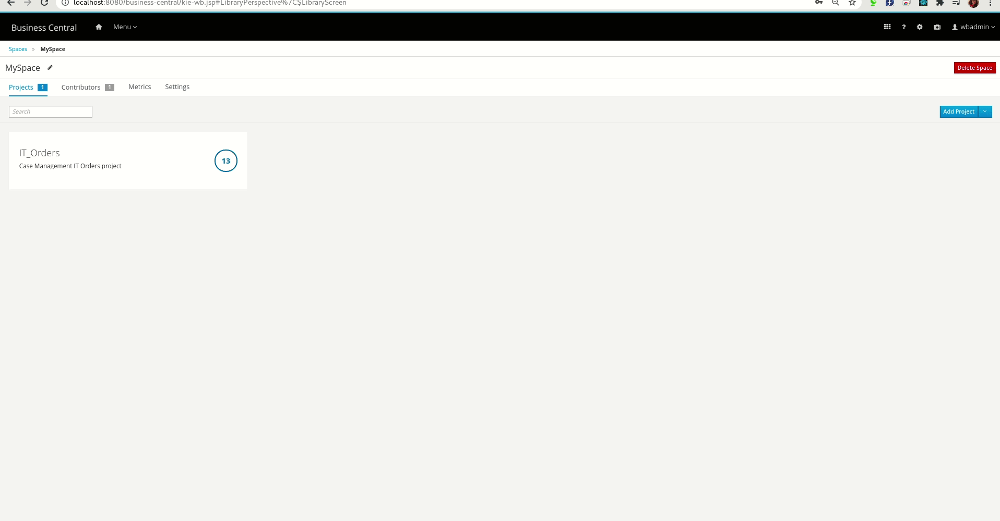
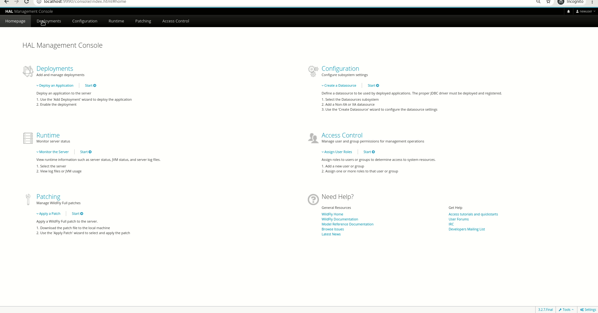
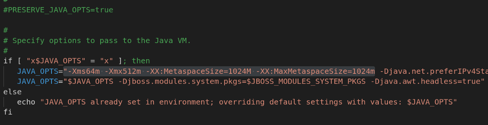
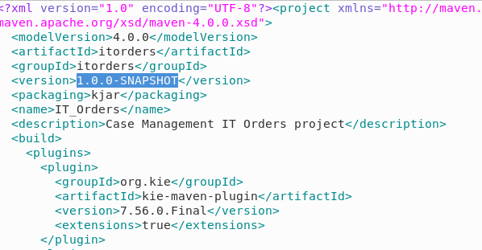
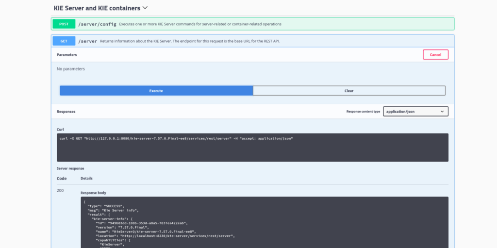
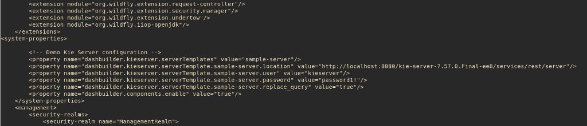

DashBuilder is a standalone tool that is also integrated into Business Central and is used by the Datasets editor and Content Manager page to facilitate creating dashboards and reporting indicating key performance indicators(KPIs), metrics, and other key data points related to business or specific processes. You can get started by referring to the DashBuilder Getting Started guide, if you are a first-time user. Refer to this post for configuring CSV datasets and this post for configuring Prometheus datasets for authoring dashboards on DashBuilder.
In the last post, we walked you through the process of adding SQL datasets for authoring dashboards in DashBuilder.
When it comes to building dashboards, you can configure the dashboards to consume your own datasets in DashBuilder from a variety of sources like Bean, CSV, SQL, Prometheus, Elastic Search, Kafka, and Execution server. In this post, you will learn how to add and configure data from the KIE execution server for your dashboards.
About KIE execution server
The KIE Execution Server is a standalone, out-of-the-box component that can be used to instantiate and execute rules via interfaces available for REST, JMS, or a Java client-side application. Created as a web deployable WAR file, this engine can be deployed on any web container. Refer to JBoss official documentation to know more about the KIE execution server.
Add and configure data from KIE execution server on DashBuilder
There are two ways in which you can add data from the KIE execution server to DashBuilder.
Using the jBPM server
jBPM server has a full setup and configuration and consists of the capabilities of Business central and KIE Execution server. You can configure your Execution server right here and author dashboards at the same time.
Head over to jbpm.org and follow the instructions on the card on the right side to download and run the jBPM server. Go to http://localhost:8080/business-central on a browser. You will see the below screen.
Business Central Home page
Login using the wbadmin credentials for both username and password fields. Follow the instructions in the following video to add IT orders sample projects. You can also choose to create a project of your own or import a project. Here is a video for your reference.
Head over to the jBPM Getting Started page to try more examples or switch to another database. Once you have deployed the project and verified it, click on the gear icon on the navbar and select “Datasets”. You can now click on the “New Data Set” button on the top of the “Data Set Explorer” sidebar(this sidebar is responsible for displaying all the datasets you have added and configured to be later consumed by pages and dashboards) or the “new data set” hyperlink on the Data Set authoring Home page.
You can now see a familiar “Data Set Creation Wizard” page which lists all the datasets providers. Select “Execution Server”.Data Set Creation Wizard page
You will now see the following screen to add data from the KIE execution server. Add a name. In the Server configuration dropdown, select sample-server and select “PROCESS” in the query target dropdown and add the query as shown in the screenshot below. Refer to the Data model for jBPM engine persistence to know more about other tables you can use for querying. Refer to this post to know more about queries for building KIE server dashboards.Execution server Data Set Editor(Configuration tab) If you are confused about the role of the fields, please hover on the question mark icons beside the fields or the text boxes adjacent to them. Click on Test to preview your dataset. Note: You may get com.google.gwt.core.client.JavaScriptException: (TypeError) : Cannot read property ‘getTimezoneOffset’ of undefined if you try to test a query the second time. After testing the query, drop the dataset and start a new one.
You are now on the Preview tab. You can now have a look at the data columns and add filters in the tabs above the dataset. You can also edit the types or delete the columns that you don’t require by unchecking the checkbox beside the columns provided on the left side. If the preview isn’t what you expected, you can switch back to the Configuration tab by clicking on it and make changes. If you are satisfied with the preview, click on the “Next” button.
Enter required comments in the Save modal and click on the Save button. Your dataset has been added and configured. You will now be directed back to the Data Set Authoring Home page. You can now see a dataset on the left pane. When you add multiple datasets, you can see the list of all of them on the left pane. Here is a screen recording of the full flow.

Add data from KIE execution server You can now click on the Menu dropdown on the navigation bar and select Content Manager to create pages and dashboards. Ensure that the columns are well configured with proper types in the “Data” section of the “Displayer Editor” after dragging the component.
Using WildFly and KIE Server WAR
To get started, you will have to configure the KIE server to run on the WildFly server. For this example, I have used WildFly 19.0.0 . Download WildFly and the KIE server WAR to deploy in the WildFly server. Unzip the WildFly zip and open a terminal inside the WildFly unzipped folder(let’s call this WILDFLY_HOME). Copy the WAR file (e.g. kie-server-7.15.0.Final-ee7.war) into the deployments folder of WildFly. You can rename it to “kie-server.war” for your convenience. Start WildFly using the standalone-full.xml profile. Go to “/bin” and run “standalone.sh” using ./standalone.sh -c standalone-full.xml or sudo sh standalone.sh -c standalone-full.xml. You can now find the WildFly server running in localhost:9990 and see the following screen which prompts to add a user.
Open another terminal and run ./bin/add-user.sh -a -u kieserver -p password1! -g admin,kie-server . This is how your terminal will look like:Add an ApplicationRealm user This is the command that you can use to add a user to the ApplicationRealm. For the Management realm, open another terminal and run ./bin/add-user.sh and add a ManagementRealm user by selecting option “a” and adding a username and password, followed by adding an “admin” group following the instructions flashing on the terminal. Here is what the terminal should look like after you add a user.Add a ManagementRealm user Note: You have to add a ManagementRealm user to login into WildFly, the ApplicationRealm users are the users you will need to login into the apps deployed in WildFly, like DashBuilder and KIE server in this case.
Click on the “Try again” link on the browser and login the same credentials that you configured in the terminal for Management Realm. You will now be able to see the HAL Management Console screen.HAL Management Console
Now click on the Start link under Deployments and you can see the KIE server deployment. You can click on the link against “Context Root” in order to access KIE server, you have to go to http://127.0.0.1:8080/kie-server-7.57.0.Final-ee8/services/rest/server/, now you will be required to enter the username and password that you configured earlier, with “kie-server” access. Once the login is successful, you can now see the following XML page.KIE server Success XML page Here is a screen recording for your reference:

Accessing the KIE server XML page
Get the KIE module from jBPM. In Step 2 of the “Using the JBPM server” section, we imported the “IT orders” project. We will need this project in our local system. Click on the gear icon on the top right corner and go to Artifacts and download the JAR and POM files, else you can just configure SSH keys in the same page itself(just like you do with GitHub) and then go to Projects -> MySpace -> IT_Orders -> Settings and copy the SSH link and clone it in your local system. Sometimes, there may be issues with SSH, so there is another way. Go to the hidden “.niogit” folder inside JBPM_HOME or root folder. You can see a “MySpace” folder, inside it there is an “IT_Orders.git”, you can clone this .git file in the same file location using git clone IT_Orders.git. Once it is cloned, open a terminal in the newly created “IT_Orders” folder and run a mvn clean install. Now that we have the required KIE module in our local Maven repository, we can create a KIE container using the same. Note:
The “.niogit” folder may be hidden, make sure you can see all the hidden folders so that you can access them.
You will have to alternatively jBPM and WildFly and not simultaneously.
We need to have the KIE module in our local Maven repository so that KIE server can access it and we can create a container using it.
Sometimes you may run into “dashbuilder-webapp-7.56.0.Final”.”org.uberfire.server.locale.GWTLocaleHeaderFilter”: java.lang.OutOfMemoryError: Metaspace, open this file: bin/standalone.conf and look for these properties and increase to 512m/1024m -XX:MetaspaceSize=512M -XX:MaxMetaspaceSize=512m, this is how it looks after changing:

Tweaked MetaSpaceSize in bin/standalone.conf
Your KIE server is running. You can now goto <a href="http://127.0.0.1:8080/kie-server-7.57.0.Final-ee8/docs/">http://127.0.0.1:8080/kie-server-7.57.0.Final-ee8/docs/</a> to see the Swagger docs and access the REST endpoints for KIE server. Create a container by going to the “KIE server and KIE containers section” and executing the “PUT /server/containers/{containerId}”, you can now see a 200 Ok response. Example PUT request URL and JSON request body datahttp://localhost:8080/kie-server/services/rest/server/containers/{containerId}
You need to use the appropriate group-id, artifact-id and version as in the pom.xml inside IT_Orders project that you cloned earlier(In our case, use “itorders” for both group-id and version-id and “1.0.0-SNAPSHOT” for version).

IT_Orders pom.xml Your container is now created. You can now execute “GET /server/containers/{containerId}” to get information about the KIE server. Here is an example of what the above GET request sends as a response.
Refer to the Resources page to know more about the endpoints and their uses. You can also know more by just following the Swagger documentation, which is fairly detailed in itself. If you aren’t comfortable with Swagger, feel free to use your own command-line interface or Postman. Make sure you run a “GET /server” to get information about the KIE server. The endpoint for this request is the base URL for the REST API. You needn’t worry about the exact curl commands. As soon as you click on “Execute” for a request, you get the corresponding curl commands as well. If you encounter request errors, review the returned error code messages and adjust your request accordingly. Here is a screenshot for your reference.

Getting the corresponding curl commands to run in terminal or Postman
Head over to the Process Instances section in the Swagger documentation and execute “GET /server/containers/{containerId}/processes” to get the processes which you will be using to create process instances. Copy a process where you want to create a instance. Execute “ POST /server/containers/{containerId}/processes/{processId}/instances” in the beginning of the same section with the copied processId and the containerId to create an instance. The body is a JSON object. You can create multiple instances.
Once you successfully create process instances, open WILDFLY_HOME/standalone/configuration/standalone-full.xml as root and add the following system properties to let DashBuilder access the server, and restart the WildFly server. You will now be able to access the dataset inside DashBuilder. The serverTemplates property is specially configured for DashBuilder that makes sure that dropdown against the Remote Server Template field in the Execution server’s Data Set Creation Wizard in DashBuilder is populated.

Add system properties to standalone-full.xml You may also need to add the following properties when you are using DashBuilder Runtime:
The token system property is an alternative, it can be used when the KIE server is configured to use a token instead of user/password. There’s also a system property to make DashBuilder create the queries on KIE Server. If true, then DB creates the query on KIE Server: dashbuilder.kieserver.serverTemplate.{SERVER_TEMPLATE}.replace_query Note:
You will have to restart the WildFly server every time you make any changes to standalone-full.xml for changes to reflect.
Make sure that the serverTemplate.location is the same as the URL you used to access the KIE REST API. There is a high possibility of the kie-server name being wrong. In that case, you might get a 405 Method Not Allowed error while trying to access the data inside DashBuilder with all the correct values.
You can now access the Configured dataset inside DashBuilder. Go to the Deployments tab and click on the link against “Context Root”. Log in to DashBuilder using the ApplicationRealm user credentials with “kieserver” access(the same that you need to login to the KIE server) you created in the beginning. You will see the homepage which resembles the screen below.DashBuilder Home page
In order to add a dataset, select Datasets from the menu. Alternatively, you can also click on the “Menu” dropdown on the top left corner beside the DashBuilder logo on the navigation bar. You will now see two headings, “DashBuilder” and “Administration”. Click on “Datasets” under Administration. You will see the Dataset Authoring home page with instructions to add datasets, create displayers and new dashboards. Click on the “new data set” hyperlink and repeat the steps 4–7 in the “Using the jBPM server” section in this post to add the dataset and create dashboards.
Conclusion
With the help of this post, you will be able to add and configure data from a KIE execution server to be consumed by your dashboards. Feel free to add your comments regarding where you got stuck so that we can improve and update this guide going further. In the upcoming posts, we will add walkthroughs of the remaining dataset providers, so stay tuned!